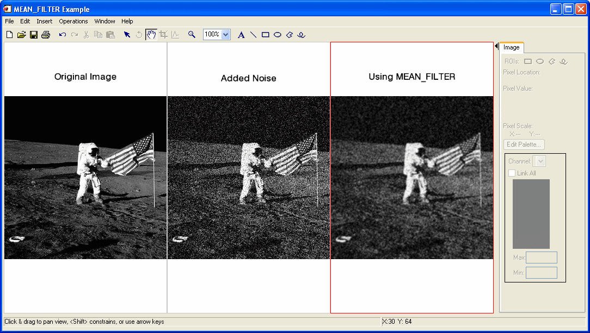

The MEAN_FILTER function applies mean filter noise reduction on a one-channel image or a multi-channel (True Color) image.
For each pixel in the image, the mean filter analyzes the neighboring pixels. The mean is computed for this neighborhood and the pixel is replaced with the mean value.
This routine is written in the IDL language. Its source code can be found in the file mean_filter.pro in the lib subdirectory of the IDL distribution.
Result = MEAN_FILTER( ImageData , Width [, Height ] [, / ARITHMETIC ] [, / GEOMETRIC ] [, INVALID = value ] [, MISSING = value ] [, / NAN ] [, / TRUE ={1|2|3}])
Returns an array containing the filtered image, which has the same dimensions and type as ImageData .
A two- or three-dimensional array containing the pixel values of the input image.
The width of the two-dimensional neighborhood. Since the neighborhood is centered on a pixel, this value must be an odd, positive integer.
The height of the two-dimensional neighborhood. Since the neighborhood is centered on a pixel, this value must be an odd, positive integer. If this value is omitted, Height is set to Width , resulting in a square neighborhood.
Set this keyword to replace a pixel with the neighborhood arithmetic mean. Using the arithmetic mean smooths local variations in the data and reduces blurry noise.
For S x,y , the M x N neighborhood surrounding the pixel ƒ( x , y ), the arithmetically-filtered mean pixel is given by:
Set this keyword to replace a pixel with the neighborhood geometric mean. Using the geometric mean smooths and reduces noise in much the same way as the arithmetic mean filter, but retains more original detail. Achieving this improved performance comes at the cost of increased processing time.
For S x,y , the M x N neighborhood surrounding the pixel ƒ( x , y ), the arithmetically-filtered mean pixel is given by:
Set this keyword to a scalar value of the same type as ImageData that should be used to indicate missing or invalid data within ImageData . Missing data are ignored when computing the mean of an element’s neighborhood. In Result , missing elements are replaced by the mean of all other valid points within that element’s neighborhood.
Tip: The INVALID keyword has the same effect as the NAN keyword, but is useful for byte or integer data which have missing values.
Note: The INVALID keyword uses a simple comparison to ignore values and should not be set to NaN. For floating-point data, you can use the INVALID and NAN keywords simultaneously to filter out both user-defined values and NaN or Infinity values.
Set this keyword to the value that will be substituted for missing data. This keyword is used only if the INVALID or NAN keyword is set.
Set this keyword to check for occurrences of the IEEE floating-point values NaN or Infinity in the input data. Pixels with the value NaN or Infinity are treated as missing data. Missing data are ignored when computing the mean of an element’s neighborhood. In Result , missing elements are replaced by the mean of all other valid points within that element’s neighborhood.
Note: MEAN_FILTER should never be called without the NAN keyword if the input array may possibly contain NaN or Infinity values.
If ImageData is a three-dimensional array (a multichannel image), set this keyword to 1, 2, or 3 to indicate which dimension represents the channels. The default is 1, for pixel interleaving, (3, m , n ). A value of 2 indicates line interleaving ( m , 3, n ), and 3 indicates band interleaving, ( m , n , 3).
In the following example, we add some binomial noise to an image, and filter it with MEAN_FILTER.
; Read the PNG file
file = FILEPATH('moon_landing.png', SUBDIR=['examples','data'])
imageOriginal = READ_PNG(file)
; Generate some 10 trial binomial noise
noise = RANDOMN(SYSTIME(/SECONDS), 300, 300, $
BINOMIAL=[10,.5])*30-150
imageBinomialNoise = imageOriginal + noise < 255 > 0
; Filter with 3x3 Mean Filter
imageMeanFiltered = MEAN_FILTER(imageBinomialNoise, 3)
; Find the image dimensions so we can display three of them
; side by side in an iImage iTool
dims = [(SIZE(imageOriginal))[1]*3, $
(SIZE(imageOriginal))[2]*1+120]
; Display the original, noise-added, and filtered images
IIMAGE, imageOriginal, VIEW_GRID=[3,1], $
VIEW_TITLE='Original Image', DIMENSIONS=dims, $
WINDOW_TITLE='MEAN_FILTER Example', $
/NO_SAVEPROMPT
IIMAGE, imageBinomialNoise, /VIEW_NEXT, VIEW_TITLE='Added Noise'
IIMAGE, imageMeanFiltered, /VIEW_NEXT, $
VIEW_TITLE='Using MEAN_FILTER'
; Increase the text size
ISETPROPERTY, 'text*', FONT_SIZE=36

Filtered Image using MEAN_FILTER
In the following example, we add some binomial noise to an image, and filter it with MEAN_FILTER, using the GEOMETRIC keyword.
First, we read the file and add noise to the image:
; Read the PNG file
file = FILEPATH('moon_landing.png', SUBDIR=['examples','data'])
imageOriginal = READ_PNG(file)
; Generate some 10 trial binomial noise
noise = RANDOMN(SYSTIME(/SECONDS), 300, 300, $
BINOMIAL=[10,.5])*30-150
imageBinomialNoise = imageOriginal + noise < 255 > 0
; Filter with 3x3 Mean Filter and the GEOMETRIC keyword
imageMeanFiltered = MEAN_FILTER(imageBinomialNoise, 3, $
/GEOMETRIC)
Next, we render the result:
; Find the image dimensions so we can display three of them
; side by side in an iImage iTool
dims = [(SIZE(imageOriginal))[1]*3, $
(SIZE(imageOriginal))[2]*1+120]
; Display the original, noise-added, and filtered images
IIMAGE, imageOriginal, VIEW_GRID=[3,1], $
VIEW_TITLE='Original Image', $
DIMENSIONS=dims, WINDOW_TITLE='MEAN_FILTER Example', $
/NO_SAVEPROMP
IIMAGE, imageBinomialNoise, /VIEW_NEXT, VIEW_TITLE='Added Noise'
IIMAGE, imageMeanFiltered, /VIEW_NEXT, $
VIEW_TITLE='Using MEAN_FILTER, /GEOMETRIC'
; Increase the text size
ISETPROPERTY, 'text*', FONT_SIZE=36
|
7.1 |
Introduced |
ESTIMATOR_FILTER , BANDPASS_FILTER , BANDREJECT_FILTER , WIENER_FILTER , LEAST_SQUARES_FILTER